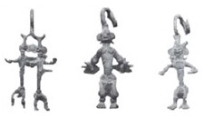

JENIS-JENIS MANUSIA PURBA
1. Meganthropus Paleojavanicus
Dilihat dari namanya, sudah dapat ditebak bahwa manusia purba jenis ini ditemukan di wilayah Jawa tepatnya di Sangiran, Jawa Tengah oleh von Koenigswald pada tahun 1936-1941. Meganthropus Paleojavanicus berarti manusia besar tertua dari Jawa. Berdasarkan hasil penemuan tersebut, ciri-ciri Meganthropus paleojavanicus yaitu:
- Hidup pada zaman Pleistosen awal yang merupakan masa awal kehidupan manusia
- Memiliki rahang bawah yang sangat tegap dan gigi geraham yang besar
- Memiliki bentuk gigi yang homonym
- Memiliki otot-otot kunyah yang kuat
- Memiliki bentuk muka yang masif dengan tulang pipi tebal, tonjolan kening yang mencolok, tonjolan belakang kepala yang tajam, serta tidak memiliki dagu
- Memakan jenis tumbuh-tumbuhan
2. Pithecanthropus
Pithecanthropus memiliki arti manusia kera, dengan Jenis manusia purba ini ditemukan di beberapa tempat. Tempat pertama adalah di Lembah Bengawan Solo, Jawa Tengah oleh Eugene Dubois pada 1891. Pithecanthropus ini kemudian diberi nama Pithecanthropus Erectus atau manusia kera berbadan tegak. Selain di Lembah Bengawan Solo, Jawa Tengah, fosil Pithecanthropus juga ditemukan di Ngandong, Solo, Jawa Tengah. Fosil ini dinamai Pithecanthropus Soloensis yang berarti manusia kera berbadan tegak dari Solo. Fosil lain ditemukan di Mojokerto, Jawa Timur sehingga manusia purba jenis Pithecanthopus ini dinamai dengan Pithecanthropus Mojokertensis.
- Pithecanthropus hidup pada masa Pleistosen awal dan tengah sekitar 1 juta hingga 1,5 juta tahun silam.
- Memiliki tinggi badan sekitar 168-180 cm dengan berat badan rata-rata 80-100 kg dan berjalan tegak.
- Memiliki volume otak sekitar 775-975 cc.
- Batang tulang lurus dengan tempat-tempat perlekatan otot yang sangat nyata. Sehingga bentuk tubuh dan anggota badan tegap.
- Memiliki rahang yang sangat kuat dengan bentuk geraham besar sehingga bisa mengunyah dan otot tengkuk yang kuat.
- Bentuk kening menonjol sangat tebal. Bentuk hidung tebal dan tidak memiliki dagu serta bagian belakang kepala tampak menonjol
3. Homo Sapiens
Jenis manusia ketiga adalah homo sapiens yang artinya manusia cerdas, yang dimaksudkan untuk penyebutan manusia purba modern. Di Indonesia jenis ini dibagi menjadi Homo Wajakensis, Homo Soloensis, dan Homo Floresiens dengan ciri-ciri Homo Sapiens yang khas pada masing-masing fosilnya.Homo Wajakensis merupakan jenis homo pertama sekaligus fosil pertama yang ditemukan di Asia pada 1889 di Wajak, Tulungagung, Jawa Timur oleh Rietschoten. Pada tahun 1931-1933 van Koenigswald, Ter Haar, dan Oppenoorth menemukan fosil Homo di Sangiran, Jawa Tengah. Fosil ini kemudian disebut sebagai Homo Soloensis. Penemuan penting juga ditemukan di Flores, Nusa Tenggara Timur. Hal ini cukup mengcengangkan karena sebelumnya fosil banyak ditemukan di Pulau Jawa dan fosil dari Flores ini memiliki ciri-ciri sedikit berbeda karena tinggi badannya diperkirakan lebih pendek dibandingkan dengan jenis Homo lainnya, sehingga beberapa ahli menyebutnya sebagai manusia “Hobbit”. Peneliti yang menemukan fosil ini adalah Peter Brown dan J. Morwood bersama dengan tim peneliti dari Indonesia pada 2003 dan diberi nama Homo Floresiensis. Berdasarkan penemuan fosilnya, manusia purba Homo memiliki ciri-ciri sebagai berikut:
- Hidup pada zaman Pleistosen awal yang merupakan masa awal kehidupan manusia
- Memiliki rahang bawah yang sangat tegap dan gigi geraham yang besar
- Memiliki bentuk gigi yang homonym
- Memiliki otot-otot kunyah yang kuat
- Memiliki bentuk muka yang masif dengan tulang pipi tebal, tonjolan kening yang mencolok, tonjolan belakang kepala yang tajam, serta tidak memiliki dagu
- Memakan jenis tumbuh-tumbuhan
PENINGGALAN ZAMAN BATU
1. Peninggalan pada Zaman Batu Tua (Paleolitikum)
Pada zaman batu tua, manusia hidup sebagai nomaden atau berpindah-pindah habitatnya berdasarkan ketersediaan binatang buruan dan makanan. Pola hidup mirip ini dengan suku-suku terasing di Indonesia, seperti Suku Kubu dan Suku Sasak.
a. Kapak Genggam dari Batu
Pada tahun 1935, Von Koenigswald menemukan alat-alat batu yang menyerupai kapak tanpa tangkai di Pacitan. Alat ini disebut kapak genggam dan digunakan oleh manusia jenis Homo erectus pada zaman Palaeolithikum. Kapak genggam juga dikenal dengan sebutan kapak perimbas, atau dalam ilmu prasejarah disebut dengan chopper artinya alat penetak.
b. Alat dari Tulang dan Tanduk
Di lokasi Ngandong dan Sidorejo dekat Ngawi, Madiun (Jawa Timur), ditemukan kapak genggam dan alat-alat yang terbuat dari tulang dan tanduk. Bentuk tulang-tulang ini menyerupai belati dengan ujung yang bergerigi seperti ujung tombak. Alat-alat ini digunakan untuk menangkap ikan dan mengorek ubi dan keladi dari dalam tanah.
c. Alat Serpih
Selain itu ditemukan juga alat-alat lain berupa alat alat kecil terbuat dari batu yang disebut dengan flakes atau alat serpih. Alat-alat ini terbuat dari batu biasa dan batu-batu berwarna-warni seperti calsedon. Karena penemuannya di daerah Ngandong, jadi alat ini dinamakan Kebudayaan Ngandong. Selain itu, Pithecanthropus erectus, pithecantropus robustus, dan Meganthropus palaeojavanicus adalah spesies manusia yang mendukung kebudayaan ini.
2. Peninggalan pada Zaman Batu Tengah (Mesolitikum)
Ciri utama peradaban zaman ini adalah manusianya sudah menetap dan tinggal di gua yang disebut abris sous roche setelah ribuan tahun berpindah-pindah. Para ahli menyebutkan bahwa zaman ini berlangsung kurang lebih 20.000 tahun silam dan perkembangan yang lebih cepat dari zaman batu tua karena terdapat pendukung Homo sapiens sebagai manusia yang cerdas.
a. Kapak Sumatera (Pebble)
Kapak ini berbentuk bulat dan terbuat dari batu kali yang dibelah dua. Kapak pebble ditemukan di sepanjang Pantai Timur Pulau Sumatera, dari Langsa (Aceh) hingga Medan dengan kondisi bentuk yang agak sempurna dan halus. Bahan pembuatannya berasal dari batu kali yang dipecah-pecah. Selain kapak bulat (pebble), juga ditemukan kapak pendek (Hache Courte) yang cara penggunaannya dengan menggenggam. Selain itu, juga ditemukan batu penggiling beserta landasannya yang digunakan untuk menghaluskan cat merah, cat ini diduga digunakan dalam acara keagamaan atau ilmu sihir.
b. Abris Sous Roche
Abris sous roche adalah goa-goa yang digunakan sebagai tempat tinggal manusia purba pada zaman Mesolithikum. Goa ini berfungsi sebagai perlindungan dari cuaca buruk dan binatang buas. Bukti ini pun ditemukan dalam perkakas seperti ujung panah, flakes, batu penggilingan, alat-alat dari tulang dan tanduk yang ditemukan di dalam gua. Salah satu contohnya adalah Gua Lawa dekat Sampung Ponorogo, Jawa Timur, yang diselidiki oleh Dr Van Stein Callenfels antara tahun 1928-1931. Alat-alat yang ditemukan di sana mencakup ujung panah, flakes, batu pipisan dengan kapak yang sudah diasah dari zaman Mesolithikum, serta alat-alat dari tulang dan tanduk rusa.
3. Zaman Batu Muda (Neolitikum)
erkembangan dari kebudayaan batu madya dikenal sebagai zaman neolitik. Kapak persegi dan lonjong adalah produk kebudayaan yang terkenal dari zaman Neolitikum yang dibuat dari batu yang lebih sempurna dan halus. Salah satu tanda dari zaman Neolitikum adalah fase atau tingkat kebudayaan pada zaman prasejarah yang memiliki ciri-ciri berupa unsur-unsur kebudayaan, seperti peralatan yang berasal dari batu yang sudah diasah, pertanian dan peternakan yang menetap, dan pembuatan tembikar.
a. Kapak Persegi
Kapak persegi adalah alat dengan penampang lintang berbentuk persegi panjang
atau trapesium. Ada berbagai ukuran, dengan yang besar disebut beliung atau cangkul, dan yang
kecil disebut trah (tatah) untuk kayu. Kapak ini umumnya digunakan di wilayah barat Indonesia,
seperti Sumatera, Jawa, dan Bali.
b. Kapak Lonjong

Kapak lonjong terbuat dari batu lonjong yang diasah halus dan memiliki tangkai. Biasanya digunakan untuk menebang pohon. Kapak ini umumnya ditemukan di wilayah timur Indonesia, seperti Irian, Seram, Tanimbar, dan Minahasa. Ada dua ukuran kapak lonjong, yaitu walzenbeil (besar) dan kleinbeil (kecil), dan fungsinya mirip dengan kapak persegi. Kapak lonjong tersebar hingga Kepulauan Melanesia dan dikenal sebagai Neolithikum Papua.
4. Zaman Batu Besar (Megalithikum)
Selanjutnya, zaman batu berakhir dengan ditandai zaman batu, di mana banyak muncul bangunan batu besar yang digunakan untuk tempat ibadah bagi nenek moyang dalam kepercayaan animisme dan dinamisme. Kebudayaan ini berkembang bersamaan dengan kebudayaan logam di Indonesia dan merupakan kelanjutan dari zaman Neolitikum.
a. Menhir
Menhir adalah tugu atau tiang batu yang digunakan sebagai tanda peringatan kepada arwah nenek moyang, dan juga untuk mempersembahkan binatang korban kepada mereka. Menhir diletakkan pada tempat tertentu sebagai objek pemujaan dan digunakan untuk memperingati kepala suku atau individu yang telah meninggal. Contoh penemuan menhir terdapat di Sumatera Selatan dan Kalimantan.
b. Dolmen
Dolmen adalah meja batu besar dengan permukaan rata yang digunakan sebagai tempat untuk meletakkan roh, tempat duduk ketua suku untuk mendapatkan berkat magis dari para leluhur, dan sebagai tempat untuk meletakkan sesaji. Dolmen terdiri dari sebuah lempengan batu besar dengan empat batu panjang sebagai penyangganya. Ini juga merupakan hasil kebudayaan zaman Megalitikum.
c. Kubur Peti Batu
Kubur Peti Batu adalah peti jenazah pada zaman batu besar yang terbuat dari batu dan ditanam dalam tanah. Kubur peti batu memiliki bentuk persegi panjang dengan alas, sisi, dan tutup yang terbuat dari batu yang disusun menjadi sebuah peti. Contoh penemuan kubur peti batu terdapat di daerah Kuningan, Jawa Barat.
ZAMAN LOGAM
Secara harafiah, perundagian berasal dari kata undagi yang berarti seseorang yang ahli dalam melakukan pekerjaan tertentu. Pada masa ini, kehidupan masyarakat boleh dibilang telah berada di tahap yang lebih maju, lantaran sudah memiliki keterampilan untuk membuat alat-alat dari bahan perunggu. Adapun alat-alat tersebut nantinya digunakan untuk memenuhi kebutuhan sehari-hari. Baik untuk bertani, berburu ataupun melakukan upacara tertentu. Pada jaman Logam orang sudah membuat alat-alat dari logam selain alat-alat dari batu. Orang sudah mengenal teknik melebur logam dan mencetaknya menjadi peralatan. Teknik pembuatan alat logam ada dua macam, yaitu dengan cetakan batu yang disebut bivalve dan dengan cetakan tanah liat dan lilin yang disebut a cire perdue. Kelebihan teknik bivalve dari a cire perdue adalah dapat digunakan berkali kali. Jaman logam terbagi lagi menjadi 3 : jaman besi, tembaga, dan perunggu. Indonesia hanya mengalami jaman perunggu dan jaman besi. Pada jaman ini, manusia mengalami masa perundagian, karena manusia sudah banyak yang menghasilkan berbagai kerajinan tangan, yang terbuat dari logam. Manusia sudah mengenal teknik melebur logam, mencetaknya menjadi alat yang diinginkan. Teknik pembuatan alat logam ada dua macam, yaitu dengan cetakan batu yang disebut bivalve dan dengan cetakan tanah liat dan lilin yang disebut a cire perdue. Berikut adalah peninggalan pada Zaman Logam:
1. Kapak Corong
Kapak corong atau kapak sepatu adalah kapak yang bagian atasnya berbentuk corong untuk memasukkan tangkai kayu. Kapak ini banyak ditemukan di Sumatra Selatan, Jawa, Bali, Sulawesi Tengah, Sulawesi Selatan, Selayar, dan dekat danau Sentani Papua. Kapak ini berfungsi untuk mencangkul, mengerjakan kayu, dan sebagai tanda kebesaran kepala suku untuk upacara.
2. Nekara
Nekara adalah genderang besar yang terbuat dari perunggu dengan pinggang di bagian tengahnya dan bagian atas tertutup. Nekara berfungsi untuk simbol status sosial, sarana upacara, alat pemanggil hujan, dan alat pemanggil roh leluhur. Hasil kebudayaan ini ditemukan di Jawa, Bali, Kepulauan Kei, Sumatra, dan Selayar.
3. Bejana Perunggu
Bejana ini memiliki bentuk seperti gitar Spanyol namun tidak memiliki tangkai. Bejana perunggu memiliki pola hiasan seperti huruf J dan hiasan anyaman. Benda ini ditemukan di daerah Sumatra dan Madura.
4. Perhiasan Perunggu
Perhiasan perunggu pada masa itu digunakan untuk bekal dalam kubur. Penemuan benda ini berada di daerah Malang, Bogor, dan Bali. Perhiasan perunggu dapat berupa cincin dan gelang
5. Arca Perunggu
Arca perunggu merupakan hasil kebudayaan yang menjelaskan tentang binatang dan manusia di masa perunggu atau zaman Logam ini. Arca tersebut memiliki bentuk beragam seperti orang yang sedang memegang busur panah, orang yang menaiki kuda, dan sebagainya. Penemuan arca ini banyak terdapat di Jawa Timur, Riau, Palembang, dan Bogor.
6. Benda Besi
Benda-benda yang terbuat dari besi seringkali digunakan juga sebagai bekal kubur dalam pemakaman. Benda besi ini dapat berupa mata kapak, pisau, sabit, pedang, mata tombak, gelang besi, dan lainnya. Daerah yang terdapat benda besi ini adalah di Wonosari Jawa Tengah dan Besuki Jawa Timur.
7. Gerabah
Gerabah pada masa ini sudah mencapai tingkat yang lebih maju dengan memiliki ragam hiasnya yang lebih kaya. Gerabah banyak ditemukan di Bali, Bogor, Anyer, dan Sulawesi Selatan.
CORAK KEHIDUPAN MANUSIA ZAMAN PRASEJARAH
Kehidupan suatu masyarakat dari masa ke masa selalu berkembang dan mengalami perubahan. Begitu pula dengan corak kehidupan manusia zaman prasejarah. Pada awalnya, masyarakat praaksara hidup secara berpindah-pindah (nomaden) dengan memanfaatkan alat-alat primitif yang masih sangat sederhana. Kemudian mereka berubah menjadi semi nomaden, dan berubah lagi menjadi menetap di suatu tempat. Berdasarkan corak kehidupannya, zaman praaksara dapat dibagi menjadi tiga periode, yaitu masa berburu dan meramu, masa bercocok tanam, dan masa perundagian.
1. Masa BErburu dan Meramu
Corak kehidupan manusia purba yang paling sederhana, yaitu pada masa berburu dan meramu. Pada periode awal munculnya peradaban manusia ini, kemampuan masyarakat dalam memanfaatkan bahan yang disediakan alam masih sangat terbatas. Umumnya, peralatan yang digunakan terbuat dari batu, kayu, atau tulang yang masih sederhana. Masa berburu dan meramu dibagi menjadi dua, yaitu masa berburu dan meramu tingkat awal dan masa berburu dan meramu tingkat lanjut.
2. MAsa Bercocok Tanam
Cara hidup dengan berburu dan meramu mulai ditinggalkan oleh masyarakat prasejarah. Kemampuan berpikir mereka semakin terasah untuk menjawab tantangan alam. Hal ini ditandai dengan kemampuan mereka dalam menghasilkan makanan dengan bercocok tanam. Manusia yang hidup pada masa bercocok tanam diperkirakan satu periode dengan Zaman Neolitikum. Masa bercocok tanam sering disebut sebagai masa revolusi kebudayaan karena terjadi perubahan besar pada berbagai corak kehidupan masyarakat praaksara.
3. Masa Perundagian

Kata perundagian diambil dari kata undagi, yang artinya seseorang yang memiliki keterampilan jenis usaha tertentu, seperti pembuatan gerabah, perhiasan, kayu, batu, dan logam. Masa perundagian merupakan periode akhir prasejarah atau yang lazim disebut Zaman Logam.